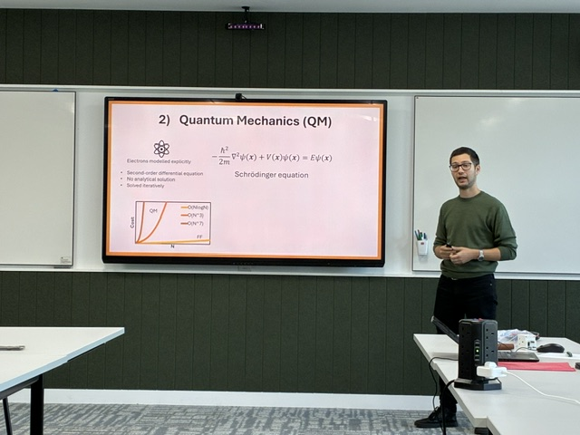

16–17 September 2026 · Durham
2026 Mid-Year Review
Six months into the programme, the MoSS team met again in Durham to review progress across the work packages, share new results and plan the next phase of the collaboration. It was a chance to see how quickly the project had grown — scientifically and as a community — and to set priorities for the months ahead.